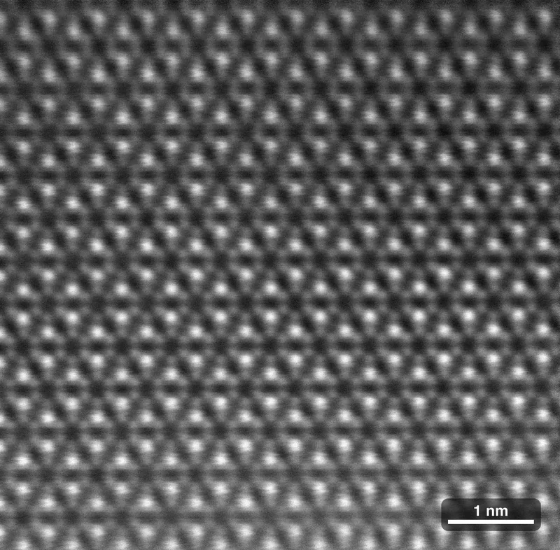
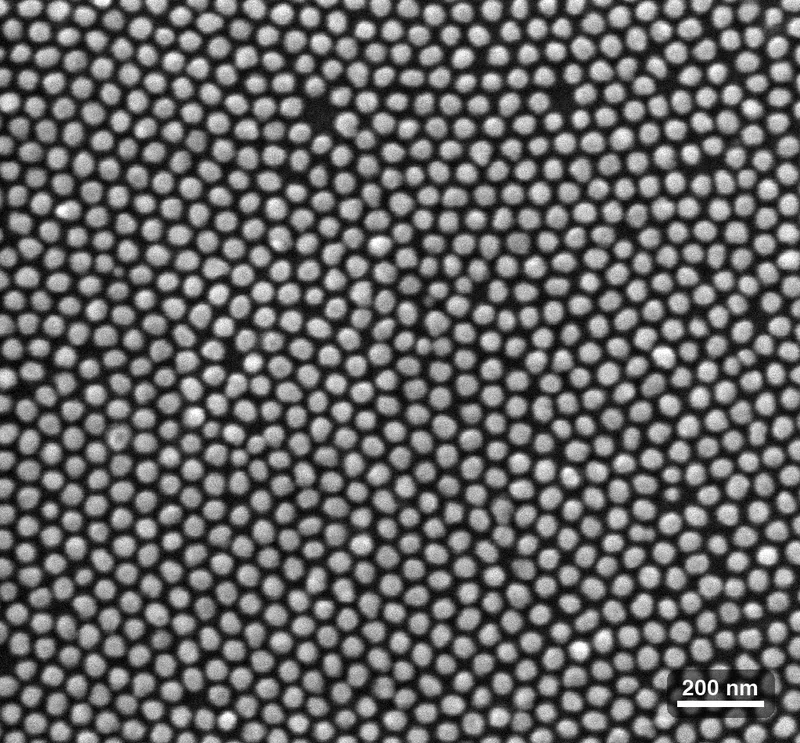
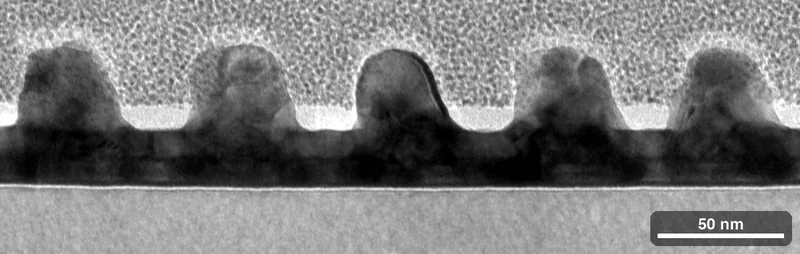
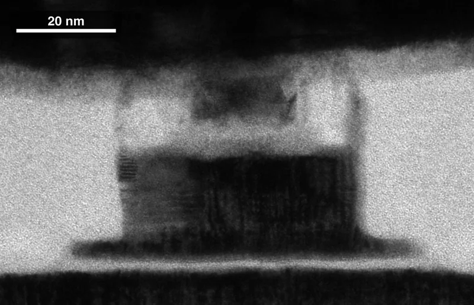

[P-04] Structural characterization · FIB + TEM · SEM
Cut a slice. Look inside.
TEM images of lamellae I prepared by focused ion beam, and one plan-view SEM I took, across three material systems. Each sits beside a 3D model of its structure; drag a model to look around.
- Methods
- FIB lamella preparation · TEM · SEM
- Materials
- Mn3Sn thin film · templated dot array · magnetic tunnel junction
Mn3Sn thin film

Kagome-type pattern in Mn3Sn
Kagome-type pattern of atomic columns in a Mn3Sn thin film, ordered across the whole field of view; drift-corrected STEM HAADF of a FIB-prepared lamella.
FIB + TEM
Templated dot array
Overview → close-up
Templated dot array from above
Plan-view SEM of a dot array formed with an anodic aluminium oxide template: tightly spaced, not-quite-round dots in a locally hexagonal pattern whose ordered patches meet at boundaries, with a few dark gaps where a dot is missing.
SEM · sample: C. Xu

Dot array in cross-section
Bright-field TEM of a FIB-prepared cross-section: a row of platinum dots, each capped by a ruthenium dome, with pale h-BN pockets in the valleys and the grainy FIB protective cap above.
FIB + TEM · sample: C. Xu

Elemental maps of the dot array
STEM HAADF image and EDS maps of a FIB-prepared cross-section: ruthenium-coated platinum dots on a tantalum underlayer, with the nitrogen signal marking where h-BN sits in the valleys and on the dot tops, under the platinum FIB cap.
FIB + TEM · sample: C. Xu

h-BN layers against a metal grain
HRTEM of a FIB-prepared cross-section: curved h-BN layers stacked in a valley between dots, next to a lattice-resolved metal grain.
FIB + TEM · sample: C. Xu
Magnetic tunnel junction

Nanoscale tunnel-junction pillar
TEM of a FIB-prepared cross-section through a nanoscale magnetic tunnel junction pillar on its spin-orbit-torque write path, encapsulated in silicon nitride under a gold top contact.
FIB + TEM · device: Y. Liu